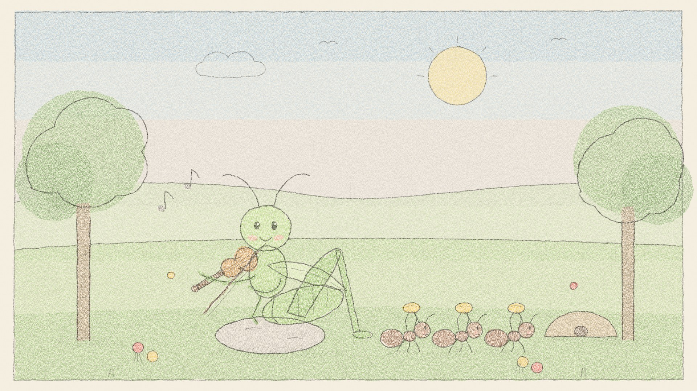

The Ant and the Grasshopper: Bedtime Story for Kids, Our Retelling (after Aesop)
The Ant and the Grasshopper, Aesop's fable, retold in our own words as a gentle bedtime story, from The Aesop for Children. A grasshopper fiddles all summer while the ants store food, then learns there is a time for work and play. In this episode: - A summer of music - The busy ants - A time for work and play Sources: The Ants & the Grasshopper, Aesop, The Aesop for Children (Library of Congress) Music: Kevin MacLeod (incompetech.com), CC BY 4.0 Gentle stories for bedtime and story time, told slowly by a warm narrator. luongnv.com/podcast/stories
Listen on Once Upon a Time Show Download MP3 Transcript
Also in: Tiếng Việt
Based on The Ants & the Grasshopper by Aesop
Transcript
Narrator: Welcome to Once Upon a Time Show. It's time for a bedtime story. Hello, little one. Pull your blanket up to your chin, nice and warm. Tonight's story is a very old one. It's one of Aesop's fables, from a book called The Aesop for Children. We tell it in our own words. It's about a family of busy little ants, and a grasshopper who loved music. Are you ready? Let's listen. Once upon a time, in a big sunny meadow, there lived a happy green grasshopper. He had long legs, bright eyes, and a tiny fiddle that he carried everywhere. In the morning he played, and in the evening he played some more. Zing, zing, zing!
The flowers swayed to his music. The butterflies danced. And the grasshopper sang, la la la, all summer long. Why should I worry? he said. The sun is warm, the grass is green, and there's plenty to eat. Not far away lived a family of ants. They were small and brown, and they were always busy. Every day they marched in a long line, one, two, one, two. They carried seeds and grains of wheat to their home under the ground. Come and play with me! called the grasshopper. But the ants shook their heads. We're saving food for the winter, they said, and on they marched. The grasshopper laughed and played another tune. Winter is far, far away, he thought.
Then, little by little, the days grew shorter. The leaves turned orange and gold, and a cool wind blew across the meadow. One bright autumn morning, the ants were busy in the warm sunshine, drying the grain they had saved all summer. Along came the grasshopper, with his fiddle under his arm. His tummy was rumbling. Please, he asked softly, could you spare me a little something to eat? The ants were surprised. Didn't you save any food for the winter? they asked. What were you doing all summer long? I was so busy with my music, said the grasshopper, that the summer slipped away. Music, was it? said the ants. Well then, perhaps now it's time for dancing! And they went back to their work.
The grasshopper sat down on a stone and thought for a long while. The ants are right, he said quietly. There's a time for work, and a time for play. So he hopped off to find the last seeds hiding in the grass. And he found a snug little hollow under a fallen leaf, out of the wind. And he made himself a promise. Next summer, I'll gather food in the morning, he said. And when the work is done, I'll play my fiddle. And now the meadow is quiet. The ants are asleep in their cozy home. And the grasshopper is tucked under his leaf, humming a soft little tune. Work a little, play a little, and rest when the night comes. Just like you, little one.
Close your eyes now. Breathe in, breathe out, nice and slow. Goodnight from Once Upon a Time Show. Sweet dreams.